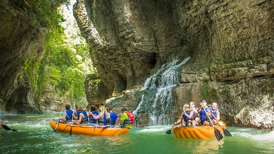

მარტვილის კანიონის შესახებ
მარტვილის კანიონი, რომელიც მდებარეობს სამეგრელოს რეგიონში, ბუნების საოცრებაა, რომელიც ცნობილია თავისი თვალწარმტაცი ხედებით, კრისტალურად სუფთა წყლებით და აყვავებული სიმწვანით. სტუმრებს შეუძლიათ ისიამოვნონ ნავით სეირნობით, ლაშქრობით და მშვიდი გარემოს დათვალიერებით.
აქტივობები
- ნავით სეირნობა
- ლაშქრობა
- ცურვა ნატურალურ აუზებში
- ფოტოსურათების გადაღება 